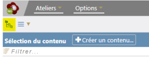

Création d'un Module Opale
L'item de plus haut niveau⚓
Dans le cas du modèle documentaire Opale, l'item de plus haut niveau dans la hiérarchie est le Module Opale.
Cet item est incontournable dans la création d'un contenu avec SCENARI.
Il peut être subdivisé en Divisions (Grandes parties dans un cours).
Activez l'affichage en mode explorateur
Cliquez sur le bouton représentant l'explorateur⚓

Remarque
Il existe d'autres méthodes pour créer un item mais le clique droit avec menu contextuel est la plus rapide.
Clique droit dans la colonne Explorateur puis
Créer un item...
Sélectionnez
Module Opaledans la fenêtreCréer un item...
Nommez le fichier xml qui sera créé : monpremiermodule
Cliquez sur
Créer